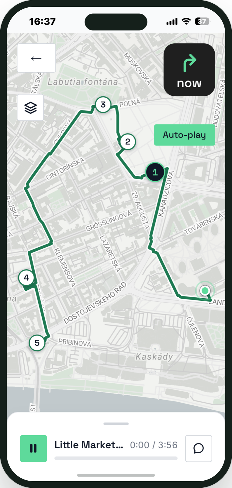

Say where you are
Type a street, neighbourhood or landmark. Try the local spelling if it doesn’t find it.
Audio tours anywhere
WalkDots builds an audio tour wherever you’re standing, then talks you through it as you go. Ask it anything along the way. No booking, no group, nothing to download.

One guide for every street, in every city
Nothing is pre-recorded. WalkDots builds the tour around wherever you’re standing, narrates it as you move, and answers whatever you ask: who built it, what happened here, whether it’s worth going inside.
Type where you are and the tour is built there. Pick what you care about, and WalkDots strings together the stops worth your feet.
The guide talks as you walk, so keep the phone in your pocket if you like. Each story starts when you reach the stop.
Ask about what you’re looking at — who built it, what happened here, whether it’s worth going inside — and get an answer before the next corner.
Spoken, turn-by-turn directions to the next stop. Missed it? Say “repeat directions” and it tells you again.
Short on time? Get the three things worth knowing about a stop in under a minute, then keep moving.
WalkDots knows where you’re standing, what you’ve already heard and what you came for — so every answer picks up the thread instead of starting from scratch.
Use headphones for the best experience. The guide waits when you stop and gets to the point when you hurry.
Stop at a doorway and the story goes deeper. Walk fast and it gives you the brief version. Times vary — every tour bends to how you actually move.
WalkDots runs in your browser. For the whole screen, tap Share → Add to Home Screen and it opens like any other app.
Zero-effort setup
Three steps between you and the first story.
Type a street, neighbourhood or landmark. Try the local spelling if it doesn’t find it.
WalkDots lays out the stops and the route between them. Tap once and you’re off.
Phone in your pocket, headphones in. Ask whatever you want, whenever you want.
Use headphones for the best experience.
Open WalkDots, type where you are, and hear the street you’re standing on.